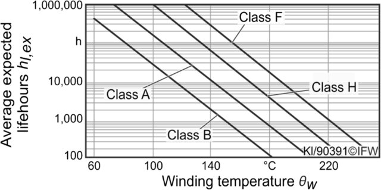
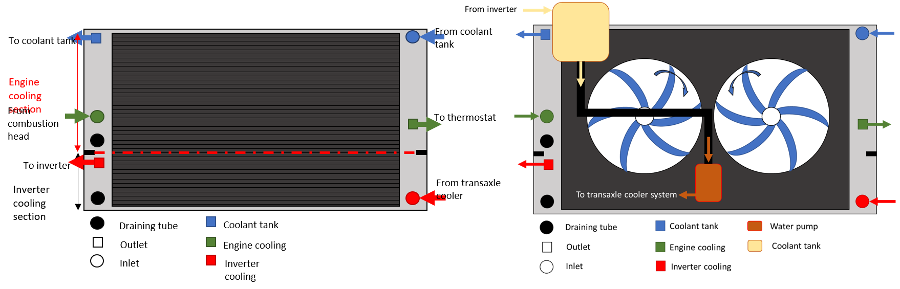
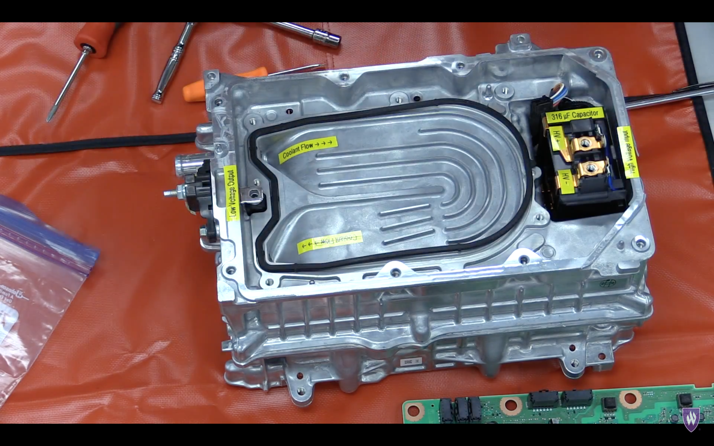
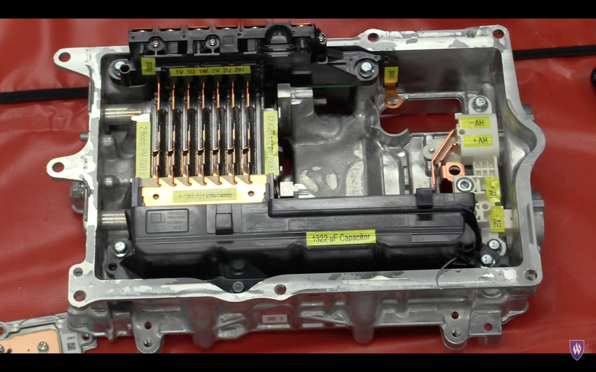
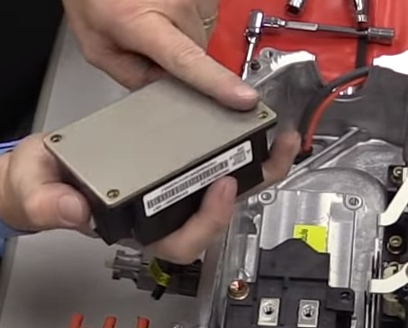
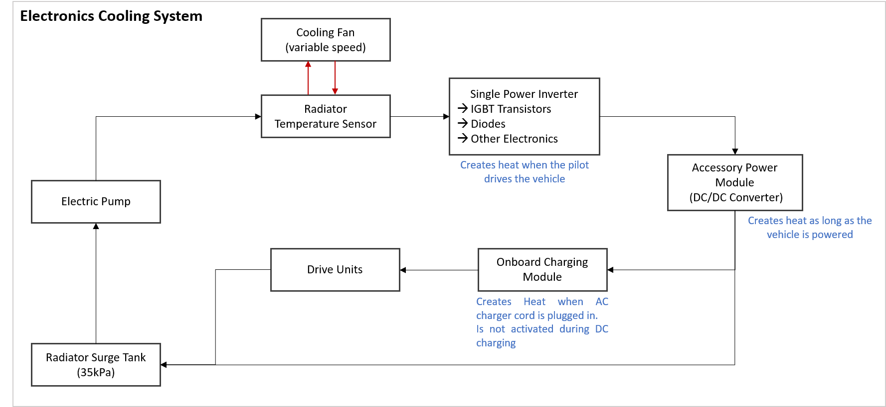
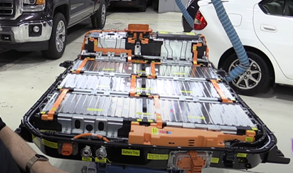
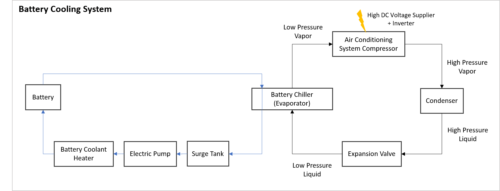

Thermique véhicule : panorama#
Ecrit par Marc Budinger, INSA Toulouse, France
Principaux composants à refroidir#
Les principaux composants à refroidir dans un véhicule électrique sont la batterie, le moteur électrique, l’onduleur et le chargeur embarqué. La batterie doit être maintenue entre 20°C et 40°C pour éviter la dégradation et assurer une performance optimale. Le moteur électrique et l’onduleur doivent rester en dessous de 120°C pour éviter la surchauffe et les pannes. Le refroidissement est crucial pour prolonger la durée de vie des composants, améliorer l’efficacité énergétique et garantir la sécurité.
Durée de vie des moteurs

Technologies de refroidissement#
Les technologies de refroidissement peuvent être :
passives : elles permettent d’evacueer ou d’absorber la chaleur sans consommer d’énergie. Elles incluent par exemple les dissipateurs thermiques et les matériaux à changement de phase (MCP).
actives : comprennent les systèmes de refroidissement liquide, les ventilateurs et les compresseurs, qui nécessitent une alimentation électrique pour fonctionner. Les systèmes de refroidissement liquide sont particulièrement efficaces pour les composants à haute densité de puissance comme les batteries et les moteurs électriques. Les ventilateurs et compresseurs sont utilisés pour évacuer la chaleur de l’habitacle et des composants électroniques.
Architecture et contrôle#
L’architecture de refroidissement dans un véhicule électrique :
centralisée : un système de refroidissement unique est utilisé pour tous les composants
décentralisée : des systèmes séparés sont utilisés pour chaque composant. Le contrôle du refroidissement est généralement géré par un système de gestion thermique (TMS = Thermal Managment System) qui utilise des capteurs de température et des algorithmes de contrôle pour ajuster le flux de refroidissement en fonction des besoins. Le TMS peut également intégrer des stratégies de préconditionnement pour optimiser la température des composants avant l’utilisation, améliorant ainsi l’efficacité et la durabilité. Il peut fonctionner de paire ou être inclus dans le BMS de la batterie.
Différentes architectures ou arrengements de composants sont possibles. Dans les liens et vidéos suivantes vous pourrez observer quelques configurations sur des véhicules industriels. Des informations intéressantes sont également accessibles dans ce rapport: Evaluation of the 2010 toyota prius hybrid synergy drive system (US department of Energy).
Quelques confiugurations d’interfaces thermiques sur la Toyota Prius#
Sur la vidéo suivante de la Toyota Prius Eco hybrid (2017) vous pouvez observer : un radiateur à deux sections, des ventilateurs à deux vitesses, une pompe à eau électrique et un réservoir de liquide de refroidissement.
Radiateur principal et ses ventilateurs 
{kind=link}
convertisseur DC-DC

{kind=link}
IGBT

{kind=link}
Autre module de puissance

Circuit de refroidissmeent d’une Chevrolet Bolt EV#
Vous pouvez visualiser les boucles de refroidissement liquide d’une Chevrolet Bolt EV sur cette vidéo.
Refroidissement de l’électronique de puissance


{kind=link}

Partie batterie

{kind=link}

{kind=link}
